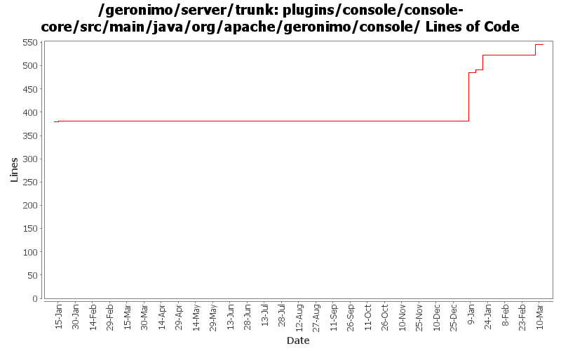

[root]/plugins/console/console-core/src/main/java/org/apache/geronimo/console
 core
(0 files, 0 lines)
core
(0 files, 0 lines)
 jms
(0 files, 0 lines)
jms
(0 files, 0 lines)
 keystore
(1 files, 528 lines)
keystore
(1 files, 528 lines)
 security
(1 files, 452 lines)
security
(1 files, 452 lines)
 i18n
(7 files, 355 lines)
i18n
(7 files, 355 lines)
 message
(6 files, 357 lines)
message
(6 files, 357 lines)
 servlet
(3 files, 355 lines)
servlet
(3 files, 355 lines)
 util
(7 files, 1452 lines)
util
(7 files, 1452 lines)

| Author | Changes | Lines of Code | Lines per Change |
|---|---|---|---|
| Totals | 18 (100.0%) | 198 (100.0%) | 11.0 |
| dwoods | 5 (27.8%) | 144 (72.7%) | 28.8 |
| jbohn | 2 (11.1%) | 32 (16.2%) | 16.0 |
| djencks | 6 (33.3%) | 17 (8.6%) | 2.8 |
| jdillon | 4 (22.2%) | 4 (2.0%) | 1.0 |
| xuhaihong | 1 (5.6%) | 1 (0.5%) | 1.0 |
GERONIMO-4517 Apply unified message display style(G-4484) to javascript alert messages. Together with the localization of these messages. Thanks for the patch, Gang Yin
1 lines of code changed in 1 file:
GERONIMO-4507 Admin console should honor the priority of user agent's language setting - patch by Gang Yin
32 lines of code changed in 2 files:
GERONIMO-4517 Apply unified message display style(G-4484) to javascript alert messages. Together with the localization of these messages. Applied js-localization-core.patch from Gang Yin.
32 lines of code changed in 1 file:
GERONIMO-4507 Admin console should honor the priority of user agent's language setting. Applied locale-priority_fix.patch from Gang Yin.
3 lines of code changed in 1 file:
GERONIMO-4484 Extraction, localization and display of messages generated in portlets. Applied common-message_fix.patch from Gang Yin.
5 lines of code changed in 1 file:
GERONIMO-4484 Extraction, localization and display of messages generated in portlets. Applied common-message-base.patch and common-message-core.patch from Gang Yin, with some minor updates.
104 lines of code changed in 2 files:
GERONIMO-4239, sort of. Use transitive depenedencies in c-m-p everywhere. This may break stuff.... let me know
13 lines of code changed in 1 file:
More loggers back to static
1 lines of code changed in 1 file:
(GERONIMO-3985) Use SLF4J as the primary logging facade for Geronimo
3 lines of code changed in 3 files:
GERONIMO-3607, sort of. Clean up plugin installation, in particular allowing import of multiple plugins in one operation. Preparatory to figuring out how to select plugins for inclusion in an assembled server
4 lines of code changed in 3 files:
GERONIMO-3732. Move the rest of deployment functionality out of console base and (mostly) into plugin-portlets. Revert the accidental menu name change for looking at web apps
0 lines of code changed in 2 files: